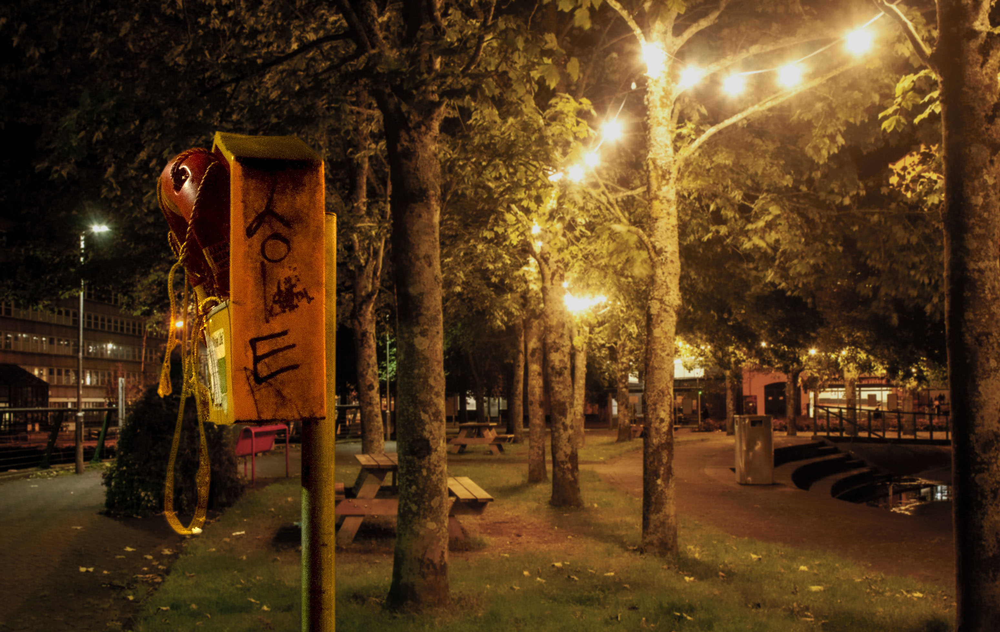

Blossom

The flowers photo was taken in UL campus. Blossom is how life begins. But editing this image by changing its colours I meant to represent how life would look in another planet.
Love night life
The image of the safety ring at night is to show the love for life at night. We can find them near by the river to safe lives when needed. This one has the word love writen on the side which makes it a special one. Also the lights in the background show up some joy reenforcing this message.
Look
This image of the look sign when crossing the streets is related to life in a way on how to mind it. It warns pedestrians to pay attention properly to avoid accidents. Specially at night that people could be distracted in many ways.